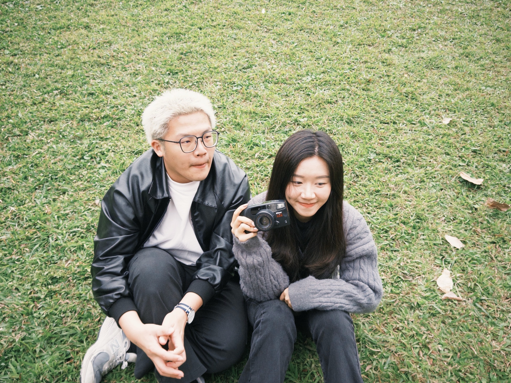
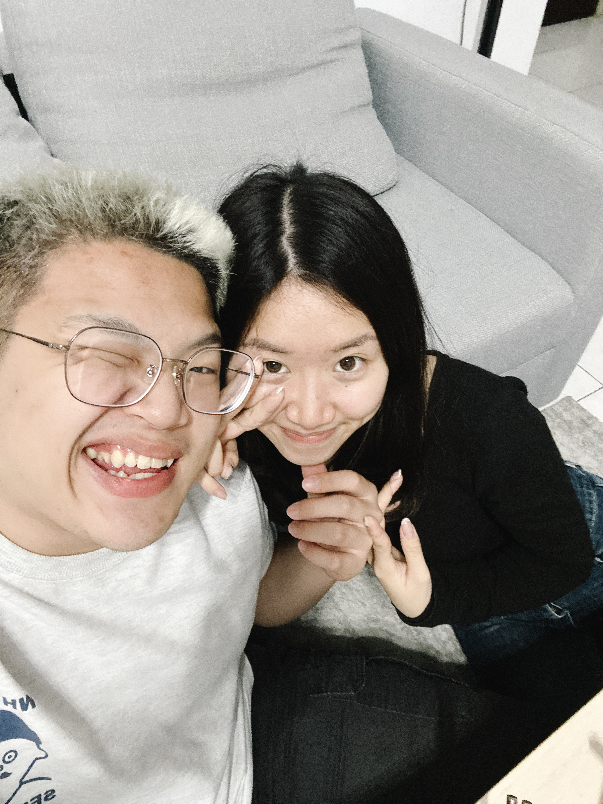
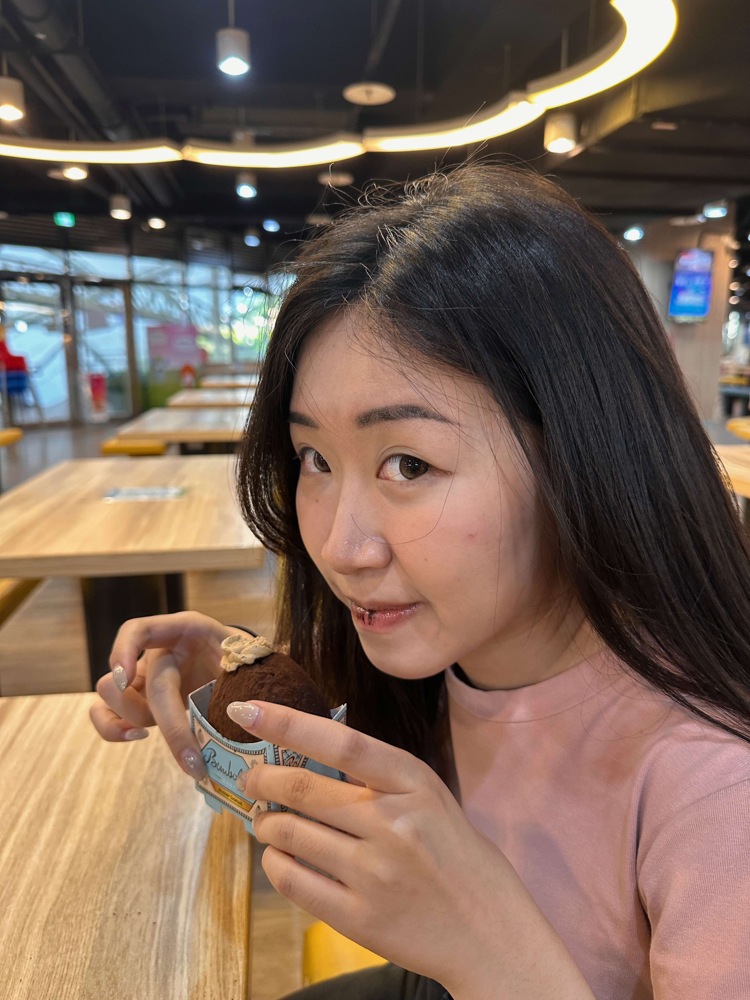
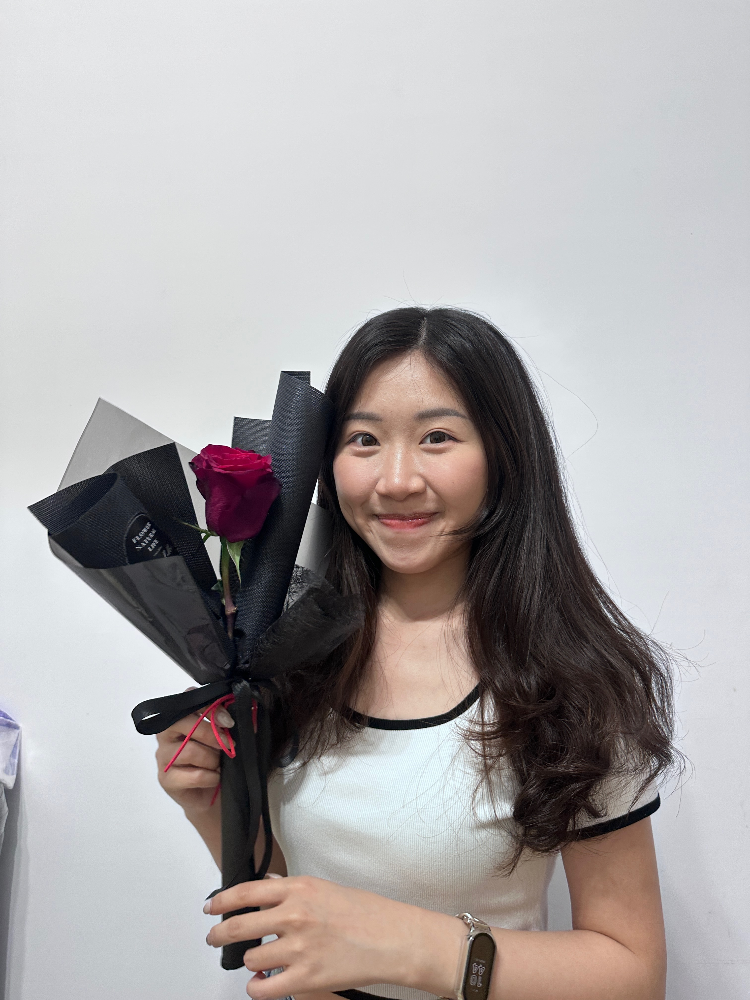
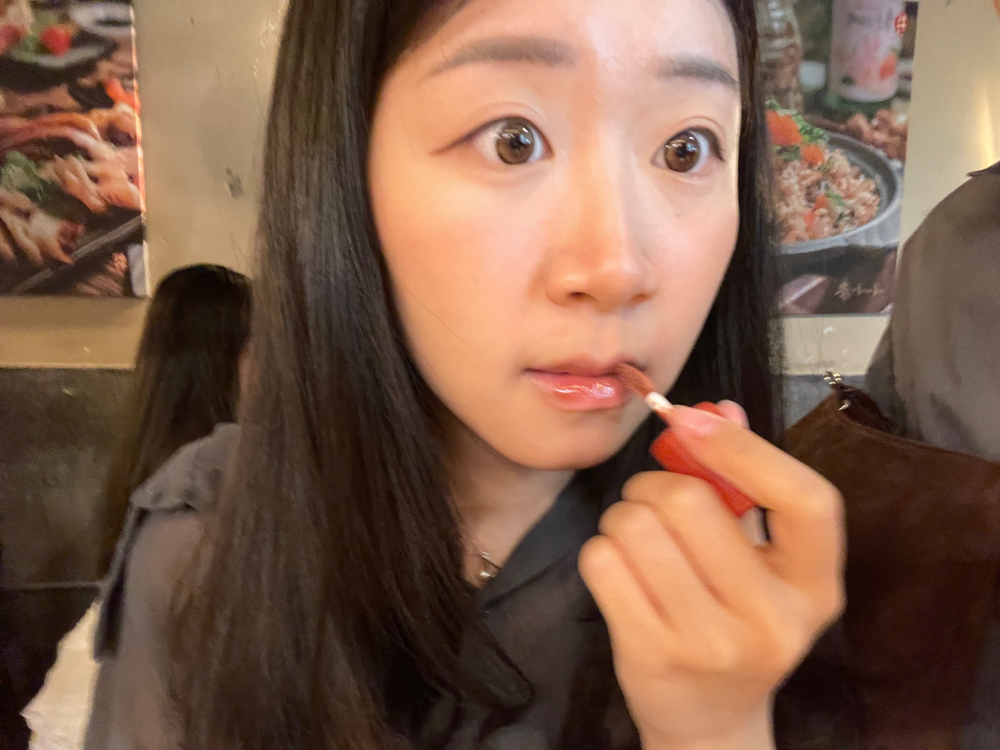
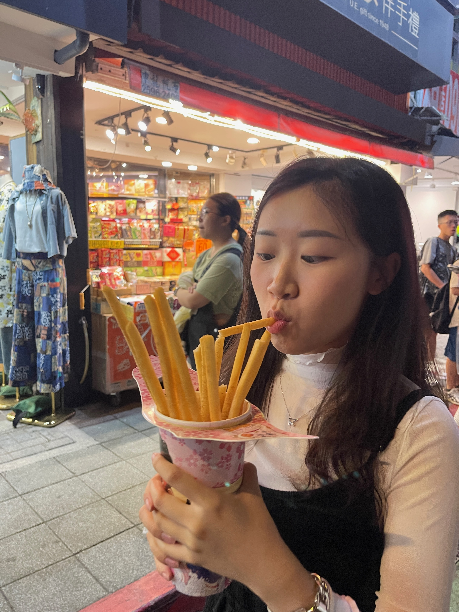
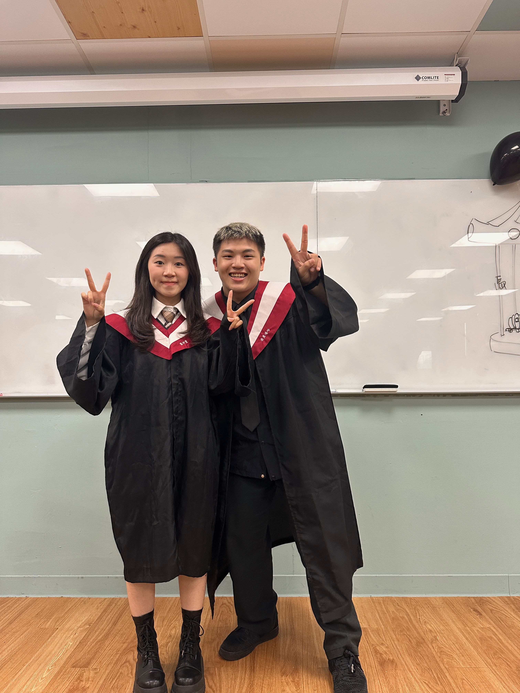
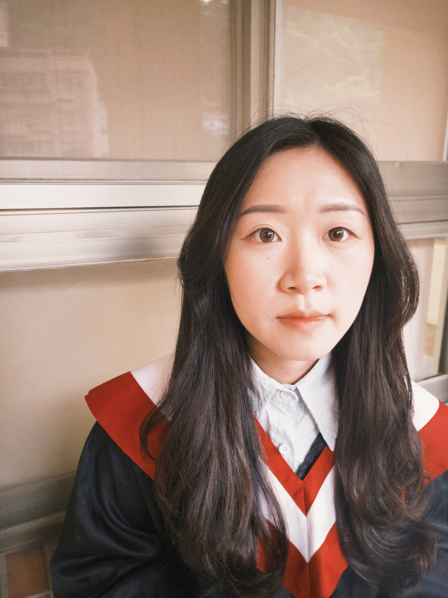
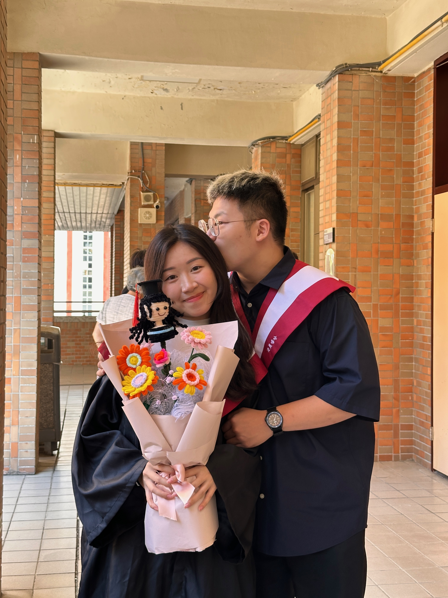

哈妞～我是你的嘻嘻大寶寶，今天過後你就要離開台灣ㄌ，不知道你到美國之後，能不能很快就適應環境，也不知道有沒有吃飽睡好，我可是非常擔心我的妙萱寶寶！在我沒辦法餵胖你的這端期間，雖然在省錢，但是也不能把身體搞壞知道嗎！
寶寶在美國的這幾個月，肯定會非常想我吧！而我在台灣也是一樣喔，無時無刻都想要黏在寶寶身邊，但我已經是個成熟的大人啦，所以我會乖乖在台灣等寶寶從美國回來ㄉ，你不在的這段時間，我向寶寶保證，我也會讓自己充實的過每一天，也會好好照顧自己，不會讓寶寶擔心，當然就算再忙，一有空馬上就會回寶寶訊息，頂多晚一點點回，希望寶寶不要想太多，我的愛永遠只會放在你身上，我不會給其他人，他們也拿不走的。


上次給你的生日卡片，你已經提前看過了，不知道你有沒有帶在身邊，所以我想再寫一封信給你，讓你想我的時候就能拿出來看看，讓寶寶想太多的時候，也能安心一點～
回想起我們去了不少地方，也一起做了很多事情，但我總覺得還不夠，感覺跟你在一起的時候，就有做不完的事情，每個都讓我那麼期待和興奮，我好期待等你回來之後，等我當完兵出來之後，我們就正式的開始了進入社會的愛情，雖然找工作、找房子都是一段艱辛的過程，但是我寶寶那麼厲害肯定沒問題！就算事情不如意，我們也一樣能把生活過得很好！


還記得我許的生日願望是希望能跟寶寶住在一起，還有一起養寵物，我很喜歡唱歌，跟寶寶在一起的日子裡，我特別會想到這段歌詞，「其實我 常會想像我們老了的樣子 左邊牽著手 右手拉小狗 可能還有很多小孩子」—理想混蛋【不是因為天氣晴朗才愛你】。
我也想像過無數遍那樣美好的生活，是左邊牽著心愛的人的手，右邊牽著我們可愛的小狗，漫步在無憂無慮的夕陽河邊，吹著溫柔且優雅的晚風，談笑間不斷逸散著幸福的氣味，沒有寶寶你，這個夢想永遠只能留在我的夢裡，因為你，它才變成了可能，才變成了我們的未來模樣。


我在遠方想著你，即使距離拆散我們，那又如何，我的心早已緊緊跟著你，那樣我也算是去過美國了吧！人生總是那麼多未知數，鼓起勇氣，帶著笑臉面對生活的未知與挑戰，是我現在告訴自己的人生指南，我也想把這段話送給寶寶，希望寶寶在那裡無論是工作、生活還是旅遊等等任何時候，當我們面臨困難與抉擇的時候，也要打起勇氣，面帶笑容的去突破與挑戰。
這個過程很難熬，但是當我們抵達路途的終點時，回頭一看會發現自己已經成長了，看這封信的當下可能不見得會有感覺，但請寶寶記得，遇到事情的時候，就打開這封信再看一次，很多時候我們覺得的小事，都不斷地在消耗著我們內心的電量，當寶寶沒電的時候，也可以看看這封信，當然也要告訴我，等我醒來或是忙完之後，就會陪著寶寶的！


我親愛的葉寶寶，嘻嘻在這呢！
我一直都在，別怕！
我永遠是你的避風港。

愛你一輩子
辰禧